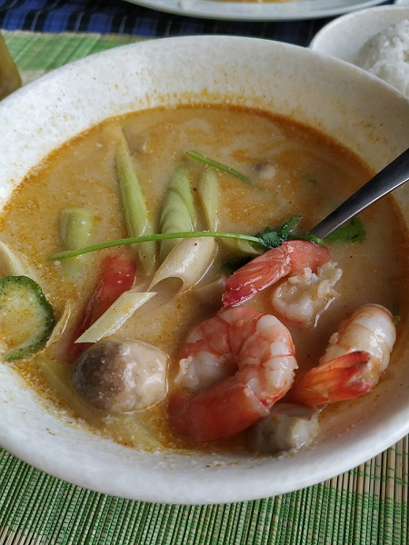
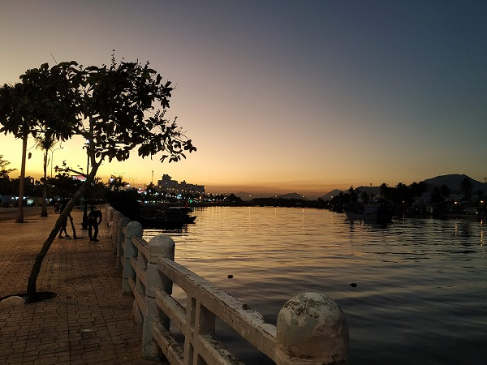
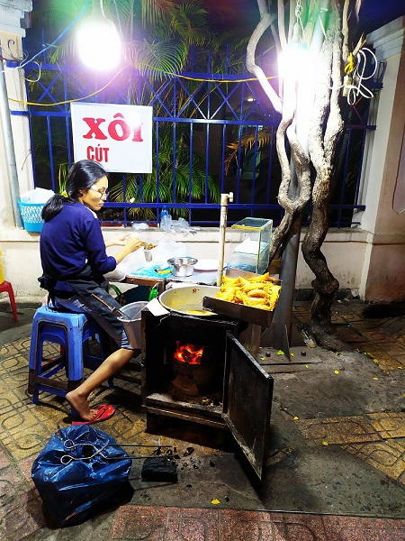
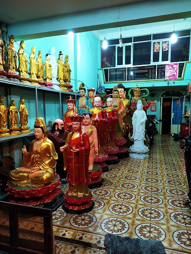
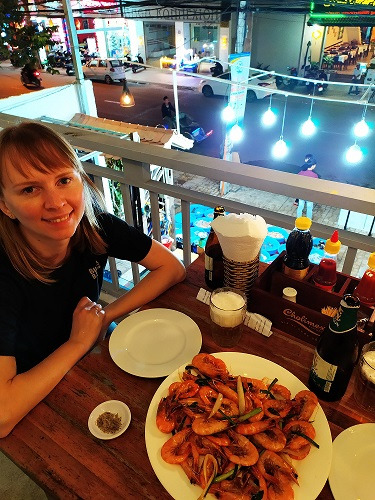

This time we were lazy and had a rest at a beach spot, that was the nearest to the hotel. The beach reminded me the one in Tel Aviv, the same beautiful and clean sand, skyscrapers along the sealine, the long seafront. This day we had tried a soup Tom Yam, I was wonder if it would be the same taste as in Ekaterinburg or not. The soup was tasty and much spicier.

Later, during our walk to Ponagar towers we cought a beautiful sunset and decided to change our plan. Instead of towers we walked along a river. There weren't other tourists. Houses on the opposit bank looked different, they were not high and not new. It looked like only local people live there.

I think this walk was the most memorable part of this trip for me because of beautiful sunset and picturesque view. On our way back we walked through local areas, saw some pieces of usual life. Sometimes it was difficult to cross a road, locals use mopeds, they didn't walk. At the end of a day, what do you think we did? Of course we ate. Bought a kg of shrimps fried with butter and garlic. Nothing special, but it was interesting experience to buy shrimps that were swimming in a small basin in a front of a cafe.



Summaries:
1 – Vietnamese sandwiches Banh mi are great
2 – Walking in Vietnam completely uncomfortable and may be even danger, especially during crossing a road.